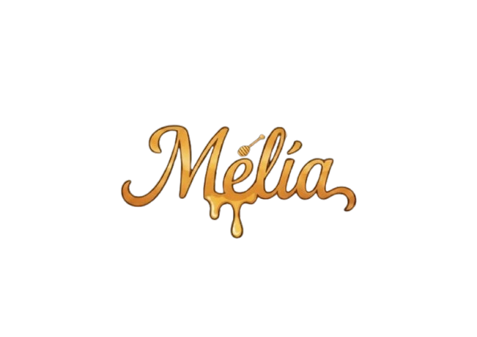
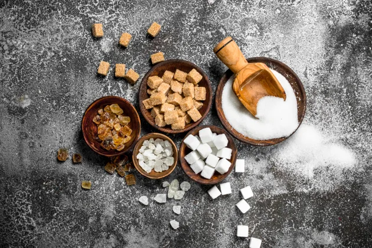

DOCES PARA TODOS, SEM EXCEÇÕES
Confeitaria inclusiva: sem açúcar, sem lactose e sem glúten, mas com muito sabor.
- Pessoas com diabetes
- Intolerantes à lactose
- Celíacos
- Quem busca hábitos mais saudáveis


Confeitaria inclusiva: sem açúcar, sem lactose e sem glúten, mas com muito sabor.

Você já viu no rótulo a expressão “zero açúcar” e ficou na dúvida se isso significa que o produto não tem absolutamente nada de açúcar? A verdade é: nem sempre é tão simples quanto parece...
Por muito tempo, o doce foi tratado como vilão. Quantas vezes você já ouviu frases como: “Comi, agora preciso compensar.” Mas será que o problema está realmente no doce, ou na forma como nos relacionamos...
A Páscoa é um dos momentos mais doces do ano, literalmente! Mas isso não significa que quem evita açúcar, lactose ou glúten precisa ficar de fora das delícias dessa época. Se você pensa que “Páscoa sem açúcar” é sinônimo...